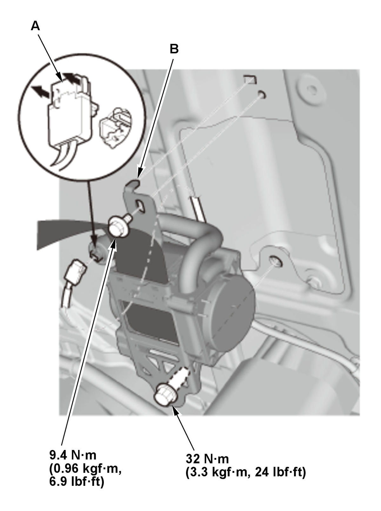

Removal and Installation
NOTE: SRS components are located in this area. Review the SRS component locations and the precautions and procedures before doing repairs or service.
- 12 Volt Battery Terminal - Disconnect
NOTE: Wait at least 3 minutes before starting work.
- Front Seat Belt Lower Anchor Bolt - Remove
- B-Pillar Upper Trim - Remove
- Front Seat Belt Guide - Remove
- Front Seat Belt Upper Anchor Bolt - Remove
- Front Seat Belt Assembly - Remove

Courtesy of HONDA, U.S.A., INC.1. Disconnect the connector (A). 2. Remove the seat belt assembly (B).
- All Removed Parts - Install
Lower anchor bolt Upper anchor bolt
1. Install the parts in the reverse order of removal.
NOTE:- Assemble the washers, the collars, and the bushings on the upper and lower anchor bolts as shown.
- Apply medium strength liquid thread lock to the upper anchor bolt before reinstallation.